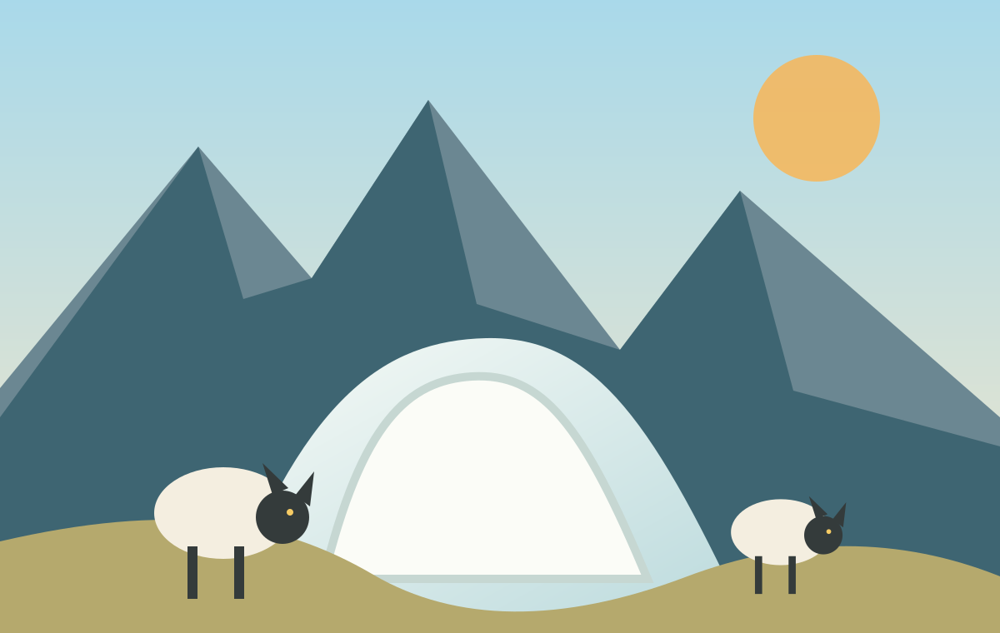

איך צמר של כבשים יכול לעזור לקרחונים?
חוקרים בשווייץ בודקים דרך טבעית לשמור על הקרח בקיץ.
Сегодня · 10 материалов · около 25 минут
Читайте понемногу каждый день: свежие сюжеты, жизненные ситуации и одна история из прошлого.

חוקרים בשווייץ בודקים דרך טבעית לשמור על הקרח בקיץ.
כבר שתיים, אבל הנהג עדיין לא התקשר.
כלי חדש עוזר למשפחות לראות שוב פרטים שנעלמו.
Как большая надежда Ford стала одним из самых известных провалов.
Читать дальше
Каждый день — короткая подборка живого современного иврита.
10 материалов · около 25 минут
9 материалов · около 22 минут
11 материалов · около 28 минут
10 материалов · около 24 минут
Ежедневный выпуск № 248
10 материалов · около 25 минут
חוקרים בשווייץ בודקים אם חומר טבעי יכול להגן על הקרח בחודשי הקיץ.
המשלוח היה אמור להגיע עד שתיים, אבל אף אחד לא התקשר.
כלי חדש מחזיר צבע ופרטים לתמונות משפחתיות.
סטודנטים ביקשו מקום שקט ללמוד בו אחרי העבודה.
פורד חשבה שהדגם החדש יהיה הצלחה גדולה.
חוקרים בשווייץ בודקים אם חומר פשוט וטבעי יכול לעזור לשמור על הקרח גם בקיץ.
, .
. . .
, . , .